Each Terminal palette now has a light form, so all nine theme cards show a dark and a light sample and Mode (System, Dark, Light) applies to all of them. System follows the device. Look is flat as before; the segment blocks and the dotted charts keep their tokens.
| Palette | page | surface | text | muted | border | primary/done | needs-you | problem | note | selection |
|---|---|---|---|---|---|---|---|---|---|---|
| green | #e9efe5 | #f4f8f1 | #14221a | #3d5646 | #5a7263 | #1b6a3d | #785a00 | #a52f2a | #0d6277 | #cde4d2 |
| amber | #f2eadb | #faf5e8 | #2b200c | #5a4620 | #7d6535 | #865400 | #6a5400 | #a5352a | #7a5516 | #ebd8a6 |
| ice | #e7edf3 | #f2f6fa | #0e1e2c | #394f63 | #587086 | #08666f | #675700 | #a3253d | #1b5ca6 | #c9dcec |
Contrast: every text pair at least 4.5:1, border at least 3:1 on page and surface (scripts/design/themes.test.ts). Divider and empty segments are the surface mixed 30% toward the border, about 1.5:1 on the surface, like the dark forms.
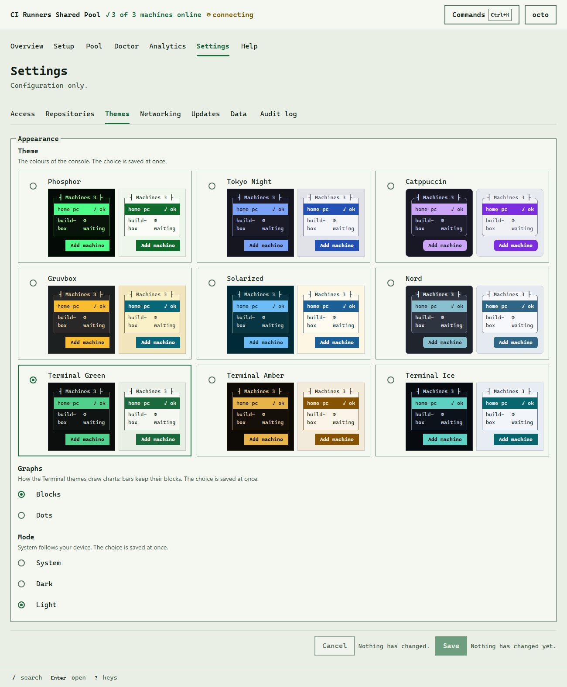
Themes, 1300 px (all nine cards, Terminal Green Light page)">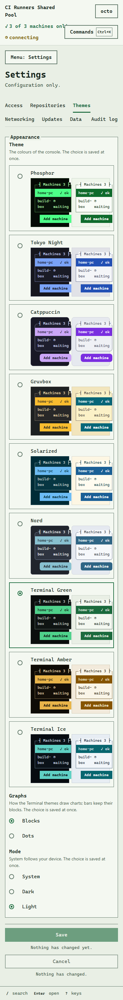
Themes, 393 px">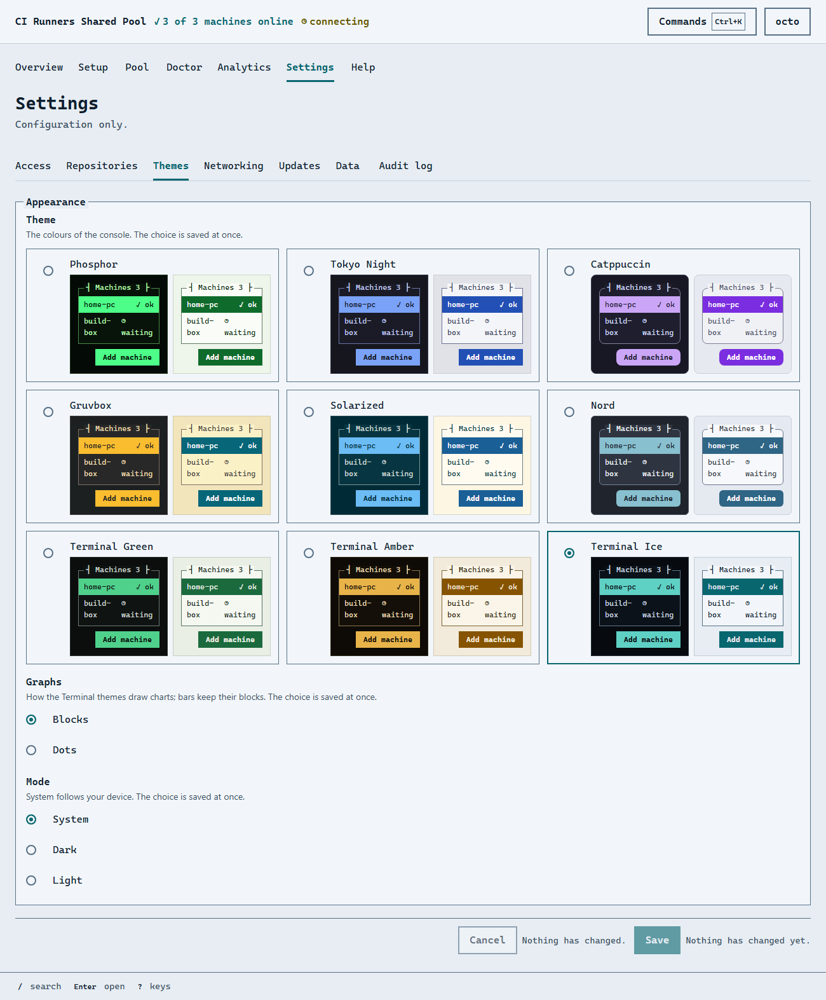
Themes, Mode System with the device light (Terminal Ice)">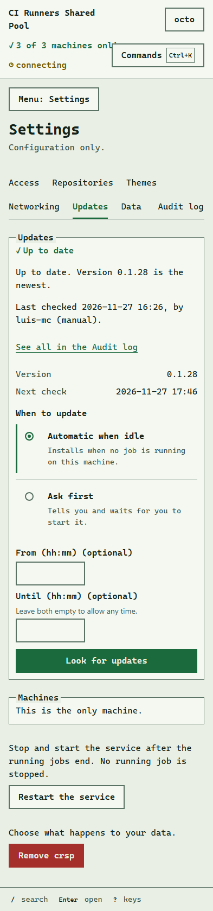
Updates, 393 px (Version and Next check wrap)">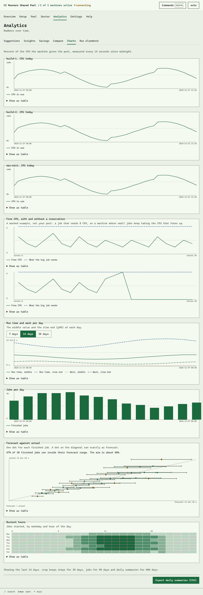
Charts, Terminal Green Light, Blocks, 1300 px">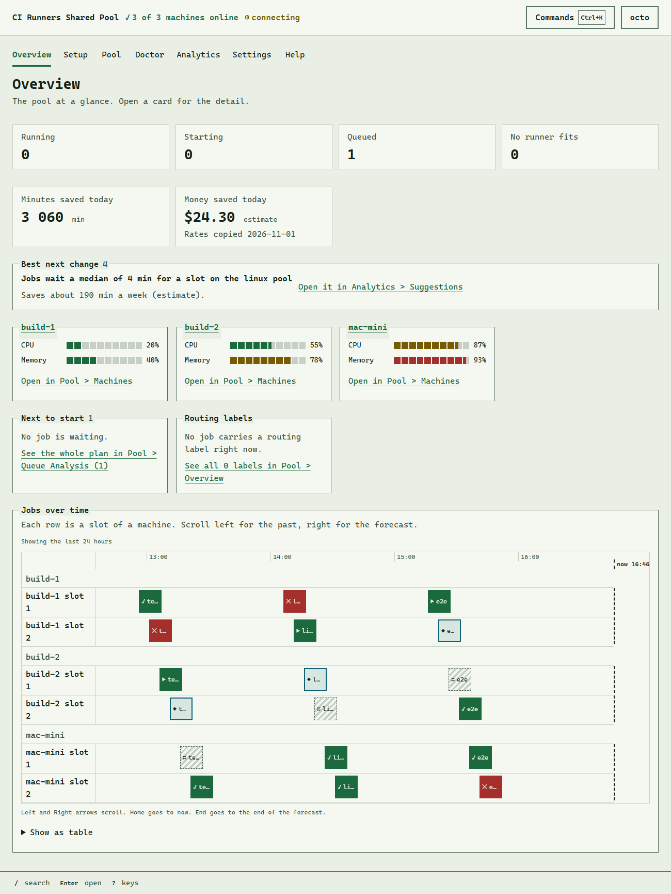
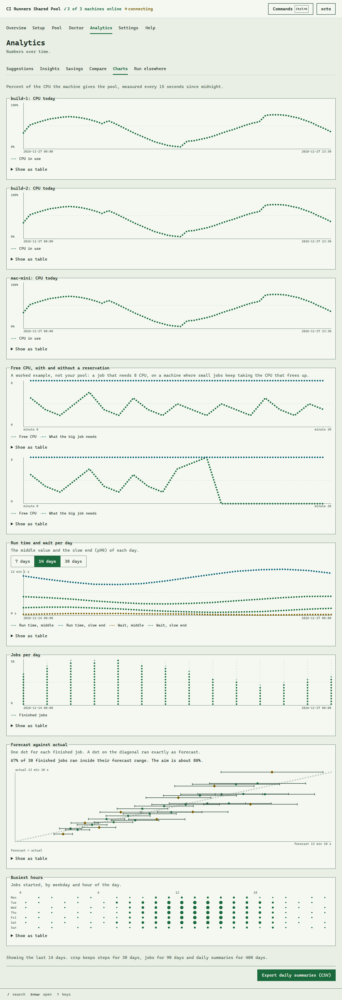
Charts, Terminal Green Light, Dots, 1300 px">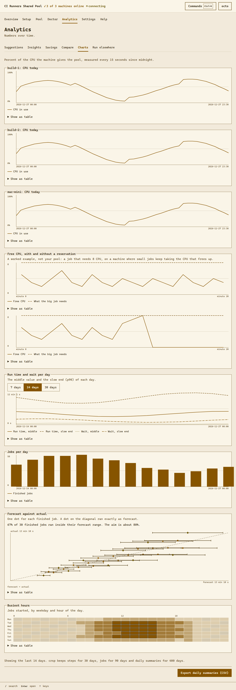
Charts, Terminal Amber Light, Blocks, 1300 px">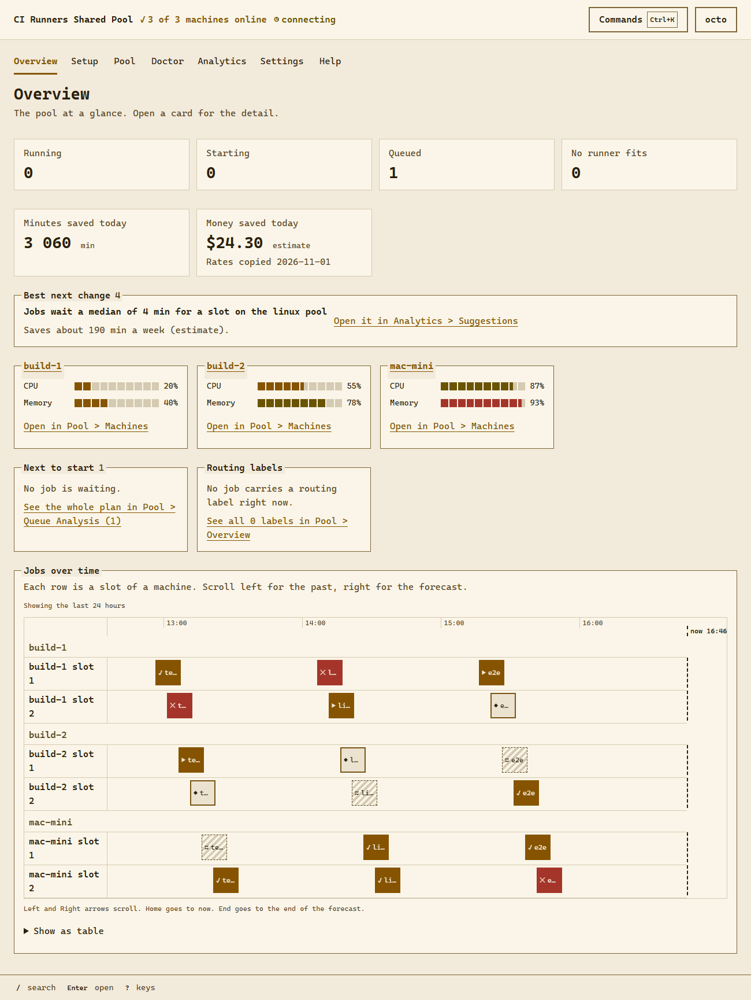
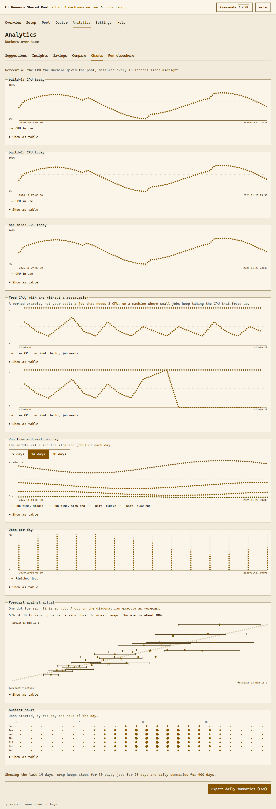
Charts, Terminal Amber Light, Dots, 1300 px">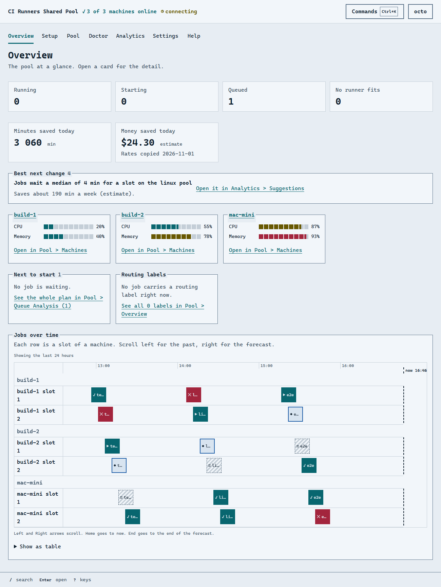
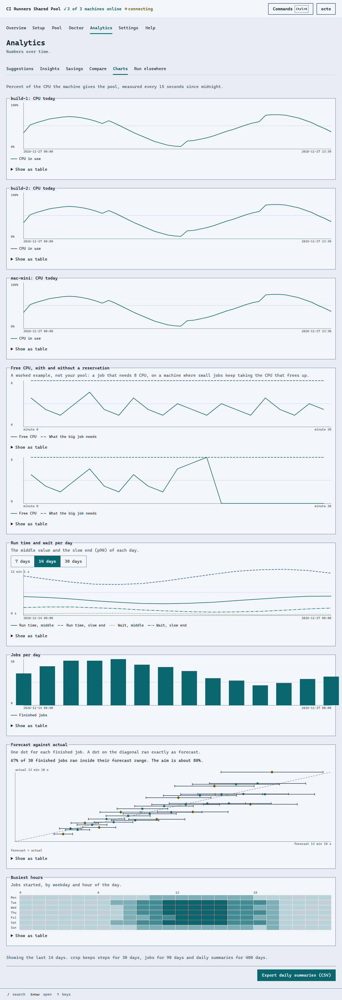
Charts, Terminal Ice Light, Blocks, 1300 px">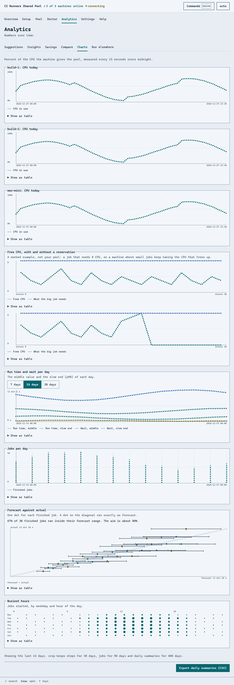
Charts, Terminal Ice Light, Dots, 1300 px">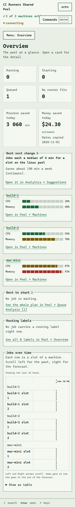
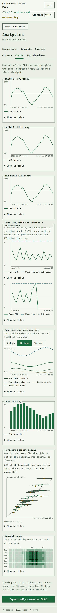
Charts, Terminal Green Light, Blocks, 393 px">